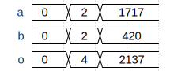

Simulator
The amaranth.sim module, also known as the simulator, makes it possible to evaluate a design’s functionality in a virtual environment before it is implemented in hardware.
Simulating circuits
The following examples simulate one of the two designs below: synchronous counter running in the sync clock domain, and combinational adder. They assume familiarity with the language guide.
from amaranth.lib import wiring
from amaranth.lib.wiring import In, Out
class Counter(wiring.Component):
en: In(1, init=1)
count: Out(4)
def elaborate(self, platform):
m = Module()
with m.If(self.en):
m.d.sync += self.count.eq(self.count + 1)
return m
class Adder(wiring.Component):
a: In(16)
b: In(16)
o: Out(17)
def elaborate(self, platform):
m = Module()
m.d.comb += self.o.eq(self.a + self.b)
return m
Running a simulation
Simulating a design always requires the three basic steps: constructing the DUT, constructing a Simulator for it, and running the simulation with the Simulator.run() or Simulator.run_until() method:
from amaranth.sim import Simulator, Period
dut = Counter()
sim = Simulator(dut)
sim.run()
However, the code above neither stimulates the DUT’s inputs nor measures the DUT’s outputs; the Simulator.run() method also immediately returns if no stimulus is added to the simulation. To make it useful, several changes are necessary:
The
Simulator.add_clock()method adds a stimulus: a process external to the DUT that manipulates its inputs (in this case, toggles the clock of thesyncdomain).The
Simulator.run_until()method runs the simulation until a specific deadline is reached.The
Simulator.write_vcd()method captures the DUT’s inputs, state, and outputs, and writes it to a VCD file.
The following code simulates a design and capture the values of all the signals used in the design for each moment of simulation time:
dut = Counter()
sim = Simulator(dut)
sim.add_clock(Period(MHz=1)) # 1 µs period, or 1 MHz
with sim.write_vcd("example1.vcd"):
sim.run_until(Period(MHz=1) * 15) # 15 periods of the clock
The captured data is saved to a VCD file example1.vcd, which can be displayed with a waveform viewer such as Surfer or GTKWave:
![{'head': {'tock': 0}, 'signal': [{'name': 'clk', 'wave': 'lp..............'}, {'name': 'rst', 'wave': 'l...............'}, {'name': 'en', 'wave': 'h...............'}, {'name': 'count', 'wave': '================', 'data': ['0', '1', '2', '3', '4', '5', '6', '7', '8', '9', '10', '11', '12', '13', '14', '15']}], 'config': {'skin': 'default'}}](_images/simulator/example1.svg)
The Simulator.reset() method reverts the simulation to its initial state. It can be used to speed up tests by capturing the waveforms only when the simulation is known to encounter an error:
try:
sim.run()
except:
sim.reset()
with sim.write_vcd("example1_error.vcd"):
sim.run()
Testing synchronous circuits
To verify that the DUT works as intended during a simulation, known values are provided as the inputs, and the outputs are compared with the expected results.
This is done by adding a different type of stimulus to the simulator, a testbench: an async Python function that runs concurrently with the DUT and can manipulate the signals used in the simulation. A testbench is added using the Simulator.add_testbench() method, and receives a SimulatorContext object through which it can interact with the simulator: inspect the value of signals using the ctx.get() method, change the value of signals using the ctx.set() method, or wait for an active edge of a clock domain using the ctx.tick() method.
The following example simulates a counter and verifies that it can be stopped using its en input:
dut = Counter()
async def testbench_example2(ctx):
await ctx.tick().repeat(5) # wait until after the 5th edge of the `sync` domain clock
assert ctx.get(dut.count) == 5 # verify that the counter has the expected value
ctx.set(dut.en, False) # deassert `dut.en`, disabling the counter
await ctx.tick().repeat(5) # wait until after the 10th edge of clock
assert ctx.get(dut.count) == 5 # verify that the counter has not been incrementing
ctx.set(dut.en, True) # assert `dut.en`, enabling the counter again
sim = Simulator(dut)
sim.add_clock(Period(MHz=1))
sim.add_testbench(testbench_example2) # add the testbench; run_until() calls the function
with sim.write_vcd("example2.vcd"):
sim.run_until(Period(MHz=1) * 15)
Since this circuit is synchronous, and the ctx.tick() method waits until after the circuit has reacted to the clock edge, the change to the en input affects the behavior of the circuit on the next clock cycle after the change:
![{'head': {'tock': 0}, 'signal': [{'name': 'clk', 'wave': 'lp..............'}, {'name': 'rst', 'wave': 'l...............'}, {'name': 'en', 'wave': 'h....0....1.....'}, {'name': 'count', 'wave': '======.....=====', 'data': ['0', '1', '2', '3', '4', '5', '6', '7', '8', '9', '10']}], 'config': {'skin': 'default'}}](_images/simulator/example2.svg)
Testing combinational circuits
A testbench that tests a combinational circuit advances simulation time using the ctx.delay() method instead of the ctx.tick() method, since the simulation does not contain a clock in this case. The Simulator.run() method stops the simulation and returns once all testbenches finish executing.
The following example simulates an adder:
dut = Adder()
async def testbench_example3(ctx):
await ctx.delay(Period(us=1))
ctx.set(dut.a, 2)
ctx.set(dut.b, 2)
assert ctx.get(dut.o) == 4
await ctx.delay(Period(us=1))
ctx.set(dut.a, 1717)
ctx.set(dut.b, 420)
assert ctx.get(dut.o) == 2137
await ctx.delay(Period(us=2))
sim = Simulator(dut)
sim.add_testbench(testbench_example3)
with sim.write_vcd("example3.vcd"):
sim.run()
Since this circuit is entirely combinational, and the Amaranth simulator uses a zero-delay model of combinational circuits, the outputs change in the same instant as the inputs do:
Replacing circuits with code
Note
This section describes an advanced technique that is not commonly used. If you are first learning how to use the simulator, you can skip it.
During simulation, it is possible to replace an Amaranth circuit with the equivalent Python code. This can be used to improve simulation performance, or to avoid reimplementing complex Python algorithms in Amaranth if they do not need to be synthesized.
This is done by adding a process to the simulator: an async Python function that runs as an integral part of the simulation, simultaneously with the DUT. A process is added using the Simulator.add_process() method, and receives a SimulatorContext object through which it can interact with the simulator. A process is conceptually similar to a testbench but differs from it in two important ways:
Testbenches run in a well-defined order (from first to last in the order they were added, yielding control only at
awaitpoints) and cannot observe inconsistent intermediate states of a design, but processes run in an undefined order while the design is converging after a change to its inputs.In a process, it is not possible to inspect the value of a signal using the
ctx.get()method, which guarantees that inconsistent intermediate states of a design cannot be observed by a process either.
A process communicates with the rest of the design in the same way an elaboratable would: through Signals.
Replacing synchronous circuits
Processes cannot inspect values of signals using the ctx.get() method. Instead, values of signals in a synchronous process are sampled at each active edge of the clock domain (or, for domains with asynchronous reset, at the assertion of the reset signal) using the ctx.tick() method.
The following code replaces the Counter elaboratable with the equivalent Python code in a process, and uses a testbench to verify its correct operation:
m = Module()
m.domains.sync = cd_sync = ClockDomain()
en = Signal(init=1)
count = Signal(4)
async def process_example4(ctx):
count_value = 0 # initialize counter to 0
async for clk_edge, rst_value, en_value in ctx.tick().sample(en):
if rst_value: # can be asserted with or without clk_edge
count_value = 0 # re-initialize counter
elif clk_edge and en_value:
count_value += 1 # advance the counter
ctx.set(count, count_value) # publish its value to the simulation
async def testbench_example4(ctx):
await ctx.tick().repeat(5)
assert ctx.get(count) == 5
ctx.set(en, False)
await ctx.tick().repeat(5)
assert ctx.get(count) == 5
ctx.set(en, True)
sim = Simulator(m)
sim.add_clock(Period(MHz=1))
sim.add_process(process_example4)
sim.add_testbench(testbench_example4)
with sim.write_vcd("example4.vcd", traces=(cd_sync.clk, cd_sync.rst, en, count)):
sim.run()
Unless it is instructed otherwise, the Simulator.write_vcd() method only captures values of signals that appear in the circuit provided to the simulator when it is created. The en and count signals do not, and are added explicitly using the traces argument so that they will appear in the VCD file.
Replacing combinational circuits
Values of signals in a combinational process are sampled anytime they change using the ctx.changed() method.
The following code replaces the Adder elaboratable with the equivalent Python code in a process, and uses a testbench to verify its correct operation:
m = Module()
a = Signal(16)
b = Signal(16)
o = Signal(17)
async def process_example5(ctx):
async for a_value, b_value in ctx.changed(a, b):
ctx.set(o, a_value + b_value)
async def testbench_example5(ctx):
await ctx.delay(Period(us=1))
ctx.set(a, 2)
ctx.set(b, 2)
assert ctx.get(o) == 4
await ctx.delay(Period(us=1))
ctx.set(a, 1717)
ctx.set(b, 420)
assert ctx.get(o) == 2137
await ctx.delay(Period(us=2))
sim = Simulator(m)
sim.add_process(process_example5)
sim.add_testbench(testbench_example5)
with sim.write_vcd("example5.vcd", traces=[a, b, o]):
sim.run()
Reference
- class amaranth.sim.Simulator(toplevel)
Simulator for Amaranth designs.
The simulator accepts a top-level design (an elaboratable), processes that replace circuits with behavioral code, clocks that drive clock domains, and testbenches that exercise the circuits and verify that they work correctly.
The simulator lifecycle consists of four stages:
The simulator is created:
sim = Simulator(design)
Processes, clocks, and testbenches are added as necessary:
sim.add_clock(Period(MHz=1)) sim.add_clock(Period(MHz=10), domain="fast") sim.add_process(process_instr_decoder) sim.add_testbench(testbench_cpu_execute)
The simulation is run:
with sim.write_vcd("waveform.vcd"): sim.run()
(Optional) The simulator is reset:
sim.reset()
After the simulator is reset, it may be reused to run the simulation again.
Note
Resetting the simulator can also be used to amortize the startup cost of repeatedly simulating a large design.
- Parameters:
toplevel (
Elaboratable) – Simulated design.
- add_clock(period, *, phase=None, domain='sync', if_exists=False)
Add a clock to the simulation.
Adds a stimulus that toggles the clock signal of
domainat a 50% duty cycle.The driven clock signal will toggle every half-
periodseconds starting atphaseseconds after the beginning of the simulation; if not specified,phasedefaults to half-periodto avoid coinciding the first active edge with the beginning of the simulation.The clock domain to drive is selected by the
domainargument, which may be aClockDomainobject or astr. If it is a string, the clock domain with that name is retrieved from thetoplevelelaboratable.- Raises:
NameError – If
domainis astr, thetoplevelelaboratable does not have a clock domain with that name, andif_existsisFalse.DriverConflict – If
domainalready has a clock driving it.RuntimeError – If the simulation has been advanced since its creation or last reset.
- add_testbench(constructor, *, background=False)
Add a testbench to the simulation.
Adds a testbench that runs concurrently with the
toplevelelaboratable and is able to manipulate its inputs, outputs, and state.The behavior of the testbench is defined by its constructor function, which is an
asyncfunction that takes a single argument, theSimulatorContext:async def testbench(ctx): ... await ctx.tick() ... sim.add_testbench(testbench)
This method does not accept coroutines. Rather, the provided
constructorcoroutine function is called immediately when the testbench is added to create a coroutine, as well as by thereset()method.The testbench can be critical (the default) or background (if the
background=Trueargument is specified). Therun()method will continue advancing the simulation while any critical testbenches or processes are running, and will exit when only background testbenches or processes remain. A background testbench can temporarily become critical using thecritical()context manager.At each point in time, all of the non-waiting testbenches are executed in the order in which they were added. If two testbenches share state, or must manipulate the design in a coordinated way, they may rely on this execution order for correctness.
- Raises:
RuntimeError – If the simulation has been advanced since its creation or last reset.
- add_process(process)
Add a process to the simulation.
Adds a process that is evaluated as a part of the
toplevelelaboratable and is able to replace circuits with Python code.The behavior of the process is defined by its constructor function, which is an
asyncfunction that takes a single argument, theSimulatorContext:async def process(ctx): async for clk_edge, rst, ... in ctx.tick().sample(...): ... sim.add_process(process)
This method does not accept coroutines. Rather, the provided
constructorcoroutine function is called immediately when the procss is added to create a coroutine, as well as by thereset()method.Processes can be critical or background, and are always background when added. The
run()method will continue advancing the simulation while any critical testbenches or processes are running, and will exit when only background testbenches or processes remain. A background process can temporarily become critical using thecritical()context manager.At each point in time, all of the non-waiting processes are executed in an arbitrary order that may be different between individual simulation runs.
Warning
If two processes share state, they must do so in a way that does not rely on a particular order of execution for correctness.
Preferably, the shared state would be stored in
Signals (even if it is not intended to be a part of a circuit), with access to it synchronized usingawait ctx.tick().sample(...). Such state is visible in a waveform viewer, simplifying debugging.- Raises:
RuntimeError – If the simulation has been advanced since its creation or last reset.
- run()
Run the simulation indefinitely.
This method advances the simulation while any critical testbenches or processes continue executing. It is equivalent to:
while self.advance(): pass
- run_until(deadline)
Run the simulation until a specific point in time.
This method advances the simulation until the simulation time reaches
deadline, without regard for whether there are critical testbenches or processes executing.
- advance()
Advance the simulation.
This method advances the simulation by one time step. After this method completes, all of the events scheduled for the current point in time will have taken effect, and the current point in time was advanced to the closest point in the future for which any events are scheduled (which may be the same point in time).
The non-waiting testbenches are executed in the order they were added, and the processes are executed as necessary.
Returns
Trueif the simulation contains any critical testbenches or processes, andFalseotherwise.
- write_vcd(vcd_file, gtkw_file=None, *, traces=())
Capture waveforms to a file.
This context manager captures waveforms for each signal and memory that is referenced from
toplevel, as well as any additional signals or memories specified intraces, and saves them tovcd_file. Ifgtkw_fileis provided, it is populated with a GTKWave save file displayingtraceswhen opened.Use this context manager to wrap a call to
run()orrun_until():with sim.write_vcd("simulation.vcd"): sim.run()
The
vcd_fileandgtkw_filearguments accept either a file object or a filename. If a file object is provided, it is closed when exiting the context manager (once the simulation completes or encounters an error).The
tracesargument accepts a trace specification, which can be one of:A
ValueLikeobject, such as aSignal;A
MemoryDataobject or an individual row retrieved from one;An interface object.
- Raises:
TypeError – If a trace specification refers to a signal with a private name.
- reset()
Reset the simulation.
This method reverts the simulation to its initial state:
The value of each signal is changed to its initial value;
The contents of each memory is changed to its initial contents;
Each clock, testbench, and process is restarted.
- class amaranth.sim.SimulatorContext(...)
Simulator context.
Simulator processes and testbenches are
asyncPython functions that interact with the simulation using the only argument they receive: the context. Using a context, it is possible to sample or update signals and wait for events to occur in the simulation.The context has two kinds of methods:
asyncmethods and non-asyncmethods. Calling anasyncmethod may cause the caller to be preempted (be paused such that the simulation time can advance), while calling non-asyncmethods never causes that.Note
While a testbench or process is executing without calling
asyncmethods, no other testbench or process will run, with one exception: if a testbench callsset(), all processes that wait (directly or indirectly) for the updated signals to change will execute before the call returns.- get(expr)
Sample the value of an expression.
The behavior of this method depends on the type of
expr:If it is a
ValueCastablewhose shape is aShapeCastable, its numeric value is converted to a higher-level representation usingfrom_bits()and then returned.If it is a
Valueor aValueCastablewhose shape is aShape, the numeric value is returned as anint.
This method is only available in testbenches.
- Raises:
TypeError – If the caller is a process.
- set(expr, value)
Update the value of an expression.
The behavior of this method depends on the type of
expr:If it is a
ValueCastablewhose shape is aShapeCastable,valueis converted to a numeric representation usingconst()and then assigned.If it is a
Valueor aValueCastablewhose shape is aShape,valueis assigned as-is.
This method is available in both processes and testbenches.
When used in a testbench, this method runs all processes that wait (directly or indirectly) for the signals in
exprto change, and returns only after the change propagates through the simulated circuits.
- critical()
Context manager that temporarily makes the caller critical.
Testbenches and processes may be background or critical, where critical ones prevent
Simulator.run()from finishing. Processes are always created background, while testbenches are created critical by default, but may also be created background. This context manager makes the caller critical for the span of thewithstatement.This may be useful in cases where an operation (for example, a bus transaction) takes multiple clock cycles to complete, and must be completed after starting, but the testbench or process performing it never finishes, always waiting for the next operation to arrive. In this case, the caller would elevate itself to become critical only for the duration of the operation itself using this context manager, for example:
async def testbench_bus_transaction(ctx): # On every cycle, check whether the bus has an active transaction... async for clk_edge, rst_active, bus_active_value in ctx.tick().sample(bus.active): if bus_active_value: # ... if it does... with ctx.critical(): # ... make this testbench critical... addr_value = ctx.get(bus.r_addr) ctx.set(bus.r_data, ...) # ... perform the access... await ctx.tick() ctx.set(bus.done, 1) await ctx.tick() ctx.set(bus.done, 0) # ... and complete the transaction later. # The `run()` method could return at this point, but not before.
- tick(domain='sync', *, context=None)
Wait until an active clock edge or an asynchronous reset occurs.
This method returns a
TickTriggerobject that, when awaited, pauses the execution of the calling process or testbench until the active edge of the clock, or the asynchronous reset (if applicable), occurs. The returned object may be used to repeatedly wait for one of these events until a condition is satisfied or a specific number of times. See the tick trigger reference for more details.The
domainmay be either aClockDomainor astr. If it is astr, a clock domain with this name is looked up in the elaboratablecontext, or intoplevelifcontextis not provided.- Raises:
ValueError – If
domainis"comb".ValueError – If
domainis aClockDomainandcontextis provided and notNone.ValueError – If
contextis an elaboratable that is not a direct or indirect submodule oftoplevel.NameError – If
domainis astr, but there is no clock domain with this name incontextortoplevel.
- delay(interval)
Wait until a time interval has elapsed.
This method returns a
TriggerCombinationobject that, when awaited, pauses the execution of the calling process or testbench byintervalseconds. The returned object may be used to wait for multiple events.The value captured by this trigger is
Trueif the delay has expired when the wait has completed, andFalseotherwise.The
intervalmay be zero, in which case the caller will be scheduled for execution immediately after all of the processes and testbenches scheduled for the current time step finish executing. In other words, if a call toSimulator.advance()schedules a process or testbench and it performsawait ctx.delay(0), this process or testbench will continue execution only during the next call toSimulator.advance().Note
Although the behavior of
await ctx.delay(0)is well-defined, it may make waveforms difficult to understand and simulations hard to reason about.- Raises:
ValueError – If
delayis negative.
- changed(*signals)
Asynchronously wait until one of the signals change.
This method returns a
TriggerCombinationobject that, when awaited, pauses the execution of the calling process or testbench until any of thesignalschange. The returned object may be used to wait for multiple events.The values captured by this trigger are the values of
signalsat the time the wait has completed.Warning
The simulation may produce glitches: transient changes to signals (e.g. from 0 to 1 and back to 0) during combinational propagation that are invisible in testbenches or waveform captures. Glitches will wake up both processes and testbenches that use this method to wait for a signal to change, and both processes and testbenches must be prepared to handle such spurious wakeups. The presence, count, and sequence in which glitches occur may also vary between simulation runs.
Testbenches that wait for a signal to change using an
awaitstatement might only observe the final value of the signal, and testbenches that wait for changes using anasync forloop will crash with aBrokenTriggerexception if they encounter a glitch.Processes will observe all of the transient values of the signal.
- edge(signal, polarity)
Asynchronously wait until a low-to-high or high-to-low transition of a signal occurs.
This method returns a
TriggerCombinationobject that, when awaited, pauses the execution of the calling process or testbench until the value ofsignal(a single-bit signal or a single-bit slice of a signal) changes fromnot polaritytopolarity. The returned object may be used to wait for multiple events.The value captured by this trigger is
Trueif the relevant transition has occurred at the time the wait has completed, andFalseotherwise.Warning
In most cases, this method should not be used to wait for a status signal to be asserted or deasserted in a testbench because it is likely to introduce a race condition. Whenever a suitable clock domain is available, use
await ctx.tick().until(signal == polarity)instead.- Raises:
TypeError – If
signalis neither a single-bitSignalnor a single-bit slice of aSignal.TypeError – If the shape of
signalis aShapeCastable.ValueError – If
polarityis neither 0 nor 1.
- posedge(signal)
Asynchronously wait until a signal is asserted.
Equivalent to
edge(signal, 1).
- negedge(signal)
Asynchronously wait until a signal is deasserted.
Equivalent to
edge(signal, 0).
- elapsed_time()
Return the currently elapsed simulation time.
- exception amaranth.sim.BrokenTrigger
Exception raised when a trigger that is repeatedly awaited using an
async forloop has a matching event occur while the body of theasync forloop is still executing.
- exception amaranth.sim.DomainReset
Exception raised when a tick trigger is repeatedly awaited, and its domain has been reset.
- class amaranth.sim.TickTrigger(...)
A trigger that wakes up the caller when the active edge of a clock domain occurs or the domain is asynchronously reset.
A
TickTriggeris an immutable object that stores a reference to a clock domain and a list of expressions to sample.The
SimulatorContext.tick()method creates a tick trigger with an empty list of sampled expressions, and theTickTrigger.sample()method creates a tick trigger based on another tick trigger that additionally samples the specified expressions.To wait for a tick trigger to be activated once (a one-shot wait), a process or testbench calls
await trigger, usually on a newly created tick trigger:async def testbench(ctx): clk_hit, rst_active, a_value, b_value = await ctx.tick().sample(dut.a, dut.b)
To repeatedly wait for a tick trigger to be activated (a multi-shot wait), a process or testbench asynchronously iterates the tick trigger, usually using the
async forloop:async def testbench(ctx): async for clk_hit, rst_active, a_value, b_value in ctx.tick().sample(dut.a, dut.b): ...
Both one-shot and multi-shot waits return the same
tuple(clk_hit, rst_active, *values)of return values:clk_hitisTrueif there was an active clock edge at the moment the wait has completed, andFalseotherwise (that is, if the clock domain was asynchronously reset).rst_activeisTrueif the clock domain is reset (synchronously or asynchronously) at the moment the wait has completed,Falseotherwise.All following return values correspond to the sampled expressions in the order in which they were added.
Aside from the syntax, there are two differences between one-shot and multi-shot waits:
A multi-shot wait continues to observe the tick trigger while the process or testbench responds to the event. If the tick trigger is activated again before the next iteration of the asynchronous iterator (such as while the body of the
async forloop is executing), the next iteration raises aBrokenTriggerexception to notify the caller of the missed event.A repeated one-shot wait may be less efficient than a multi-shot wait.
Note
The exact behavior of
rst_activediffers depending on whetherdomainuses synchronous or asynchronous reset; in both cases it isTrueif and only if the domain reset has been asserted. Reusable processes and testbenches, as well as their building blocks, should handle both cases.- sample(*exprs)
Sample expressions when this trigger is activated.
This method returns a new
TickTriggerobject. When awaited, this object returns, in addition to the values that would be otherwise returned byawait trigger, the values ofexprs(anyValueLike) at exactly the moment at which the active clock edge, or the asynchronous reset (if applicable), has occurred.Combining
tick()withsample()can be used to capture the state of a circuit after the active clock edge, but before propagation of signal values that have been updated by that clock edge:async for clk_edge, rst_active, in_a_value, in_b_value in \ ctx.tick().sample(in_a, in_b): ...
Chaining calls to
sample()has the same effect as calling it once with the combined list of arguments. The code below has the same behavior as the code above:async for clk_edge, rst_active, in_a_value, in_b_value in \ ctx.tick().sample(in_a).sample(in_b): ...
Note
Chaining calls to this method is useful for defining reusable building blocks. The following (simplified for clarity) implementation of
until()takes advantage of it by first appendingconditionto the end of the list of captured expressions, checking if it holds, and then removing it from the list of sampled values:async def until(trigger, condition): async for clk_edge, rst_active, *values, done in trigger.sample(condition): if done: return values
- async until(condition)
Repeat this trigger until a condition is met.
This method awaits this trigger at least once, and returns a
tupleof the values that aresample()d whenconditionevaluates to a non-zero value. Values sampled during previous repeats are discarded.Awaiting a
triggerreturns values indicating the state of the clock and reset signals, while awaitingtrigger.until(...)does not:while True: clk_edge, rst_active, *values, flag_value = await trigger.sample(flag) # never raises if flag_value: break # `values` may be used after the loop finishes
values = await trigger.until(flag) # may raise `DomainReset`
- Raises:
TypeError – If the shape of
conditionis aShapeCastable.DomainReset – If the clock domain has been synchronously or asynchronously reset during the wait.
- async repeat(count)
Repeat this trigger a specific number of times.
This method awaits this trigger at least once, and returns a
tupleof the values that aresample()d during the last repeat. Values sampled during previous repeats are discarded.Awaiting a
triggerreturns values indicating the state of the clock and reset signals, while awaitingtrigger.repeat(...)does not:for _ in range(3): clk_edge, rst_active, *values = await trigger # never raises # `values` may be used after the loop finishes
values = await trigger.repeat(3) # may raise `DomainReset`
- Raises:
ValueError – If
countis less than 1.DomainReset – If the clock domain has been synchronously or asynchronously reset during the wait.
- class amaranth.sim.TriggerCombination(...)
A list of triggers, the activation of any of which will wake up the caller.
A
TriggerCombinationis an immutable object that stores a list of triggers and expressions to sample. The trigger combination wakes up the caller when any of these triggers activate, and it samples all of the signals at the same moment.The
SimulatorContext.delay(),SimulatorContext.changed(), andSimulatorContext.edge()methods create a trigger combination that consists of just that one trigger, whileTriggerCombination.delay(),TriggerCombination.changed(), andTriggerCombination.edge()methods create a trigger combination based on another trigger combination by extending it with an additional trigger. TheTriggerCombination.sample()method creates a trigger combination based on another trigger combination that wakes up the caller in the same conditions but additionally samples the specified expressions.To wait for a trigger combination to be activated once (a one-shot wait), a process or testbench calls
await triggers, usually on a newly created trigger combination:async def testbench(ctx): a_value, b_value = await ctx.changed(dut.a, dut.b)
To repeatedly wait for a trigger combination to be activated (a multi-shot wait), a process or testbench asynchronously iterates the trigger combination, usually using the
async forloop:async def testbench(ctx): async for a_value, b_value in ctx.changed(dut.a, dut.b): ...
Both one-shot and multi-shot waits return the same
tupleof return values, the elements of which are determined by the triggers and sampled expressions that have been added to the trigger combination, in the order in which they were added. For a detailed description of the return values, refer toSimulatorContext.delay(),SimulatorContext.changed(),SimulatorContext.edge(), andTriggerCombination.sample().Aside from the syntax, there are two differences between one-shot and multi-shot waits:
A multi-shot wait continues to observe the trigger combination while the process or testbench responds to the event. If the trigger combination is activated again before the next iteration of the asynchronous iterator (such as while the body of the
async forloop is executing), the next iteration raises aBrokenTriggerexception to notify the caller of the missed event.A repeated one-shot wait may be less efficient than a multi-shot wait.
- sample(*exprs)
Sample signals when a trigger from this combination is activated.
This method returns a new
TriggerCombinationobject. When awaited, this object returns, in addition to the values that would be returned byawait trigger, the values ofexprsat exactly the moment at which the wait has completed.Combining
delay(),changed(), oredge()withsample()can be used to capture the state of a circuit at the moment of the event:async for arst_edge, delay_expired, in_a_value, in_b_value in \ ctx.posedge(arst).delay(1e-3).sample(in_a, in_b): ...
Chaining calls to
sample()has the same effect as calling it once with the combined list of arguments. The code below has the same behavior as the code above:async for arst_edge, delay_expired, in_a_value, in_b_value in \ ctx.posedge(arst).delay(1e-3).sample(in_a).sample(in_b): ...
Note
Chaining calls to this method is useful for defining reusable building blocks. See the documentation for
TickTrigger.sample()for a detailed example.
- delay(interval)
Add a delay trigger to the list of triggers.
This method returns a new
TriggerCombinationobject. When awaited, this object also waits for the same trigger asSimulatorContext.delay(), and returns, in addition to the values that would be returned byawait trigger, the value returned bySimulatorContext.delay().
- changed(*signals)
Add a signal change trigger to the list of triggers.
This method returns a new
TriggerCombinationobject. When awaited, this object also waits for the same trigger asSimulatorContext.changed(), and returns, in addition to the values that would be returned byawait trigger, the values returned bySimulatorContext.changed().
- edge(signal, polarity)
Add a low-to-high or high-to-low transition trigger to the list of triggers.
This method returns a new
TriggerCombinationobject. When awaited, this object also waits for the same trigger asSimulatorContext.edge(), and returns, in addition to the values that would be returned byawait trigger, the values returned bySimulatorContext.edge().
- posedge(signal)
Add a low-to-high transition trigger to the list of triggers.
Equivalent to
edge(signal, 1).
- negedge(signal)
Add a high-to-low transition trigger to the list of triggers.
Equivalent to
edge(signal, 0).